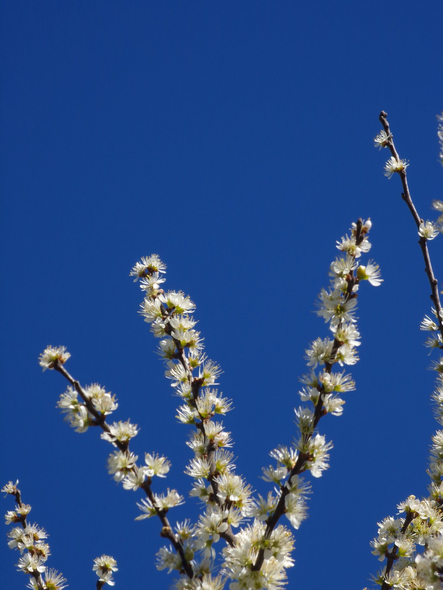

← Înapoi la poeme

pe sub pleoapele mele alb întredeschise
sunetul curgerii
curg precum pașii foșniți
sunt o toamnă târzie
înnorată
până la cuvânt
din când în când
călătoresc singur prin ceas
din când în când
imi văd umbra
rotundă
ca o femeie
și mă îndrăgostesc
de melancolia uitării
Copyright © 2022 Andrei Constantin Burdușa · All Rights Reserved